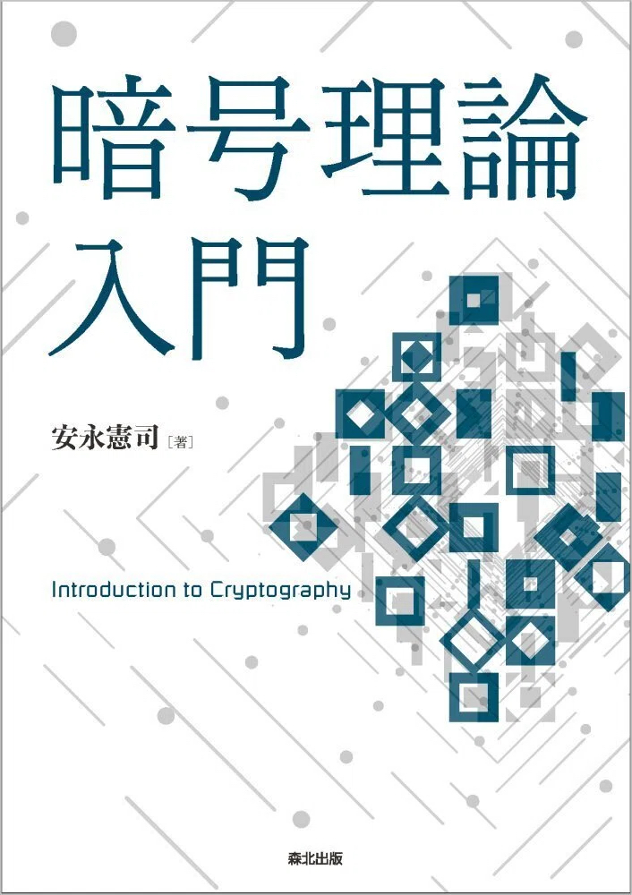

暗号理論の本を執筆しました．

森北出版のページ 森北出版noteのページ
本書は，暗号を数学的に扱うための暗号理論の入門書です． 暗号理論の考え方，各要素技術とその安全性定義，安全性証明の方法などを学べます． 全部で15章あります．各章は10ページ程度と短めですので，大学の授業でも利用できます． 本書の内容がおおよそ理解できれば，ePrint などにある最新の論文も読めるでしょう．
さらに勉強を進めたい方には，以下の資料をおすすめします．